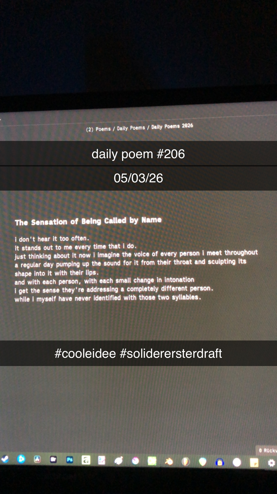

The Sensation of Being Called by Name
i don't hear it too often.
it stands out to me every time that i do.
just thinking about it now i imagine the voice of every person i meet throughout a regular day pumping up the sound for it from their throat and sculpting its shape into it with their lips.
and with each person, with each small change in intonation
i get the sense they're addressing a completely different person.
while i myself have never identified with those two syllables.
